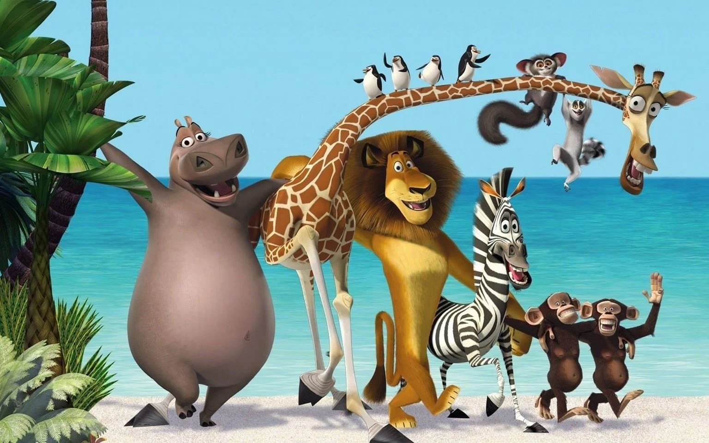

Trailer
Personagens
Sinopse
Madagascar é uma animação divertida lançada pela DreamWorks em 2005. A história gira em torno de quatro
animais
do zoológico do Central Park,
em Nova York: Alex, o leão carismático e estrela do zoológico; Marty, a zebra sonhadora
que deseja
conhecer a natureza selvagem; Melman, a girafa
hipocondríaca; e Gloria, a hipopótamo confiante e protetora.
Após Marty fugir do zoológico em busca
de liberdade, seus amigos decidem ir atrás dele,
mas acabam capturados e enviados
para a África. No entanto, o navio que os transportava sofre um
acidente, e eles vão parar na ilha de Madagascar.
Lá,eles
conhecem os lêmures liderados pelo excêntrico Rei Julien, que os recebem com festa — mas logo
os amigos descobrem
que viver na selva não é
tão fácil quanto imaginavam.O filme explora a importância da amizade, da liberdade e da aceitação
de quem somos, com muito humor e trilha sonora contagiante.
É uma aventura leve e encantadora para todas as idades!
Informações Técnicas
- Diretores:Eric Darnell e Tom McGrath
- Elenco principal:Ben Stiller como Alex (o leão);
Chris Rock como Marty (a zebra);
David Schwimmer como Melman (a girafa);
Jada Pinkett Smith como Gloria (a hipopótama);
Sacha Baron Cohen como King Julien (o lêmure);
Cedric the Entertainer como Maurice (o lêmure);
Andy Richter como Mort (o lêmure); - Duração: 86 minutos
- Classificação: Livre (para todos os públicos)
- Gênero: Animação,Aventura e Comédia